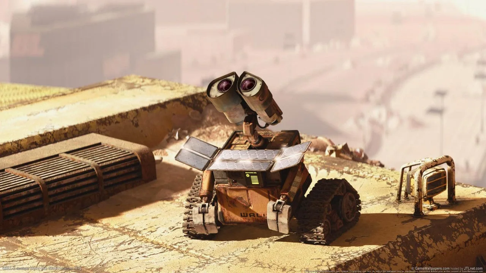
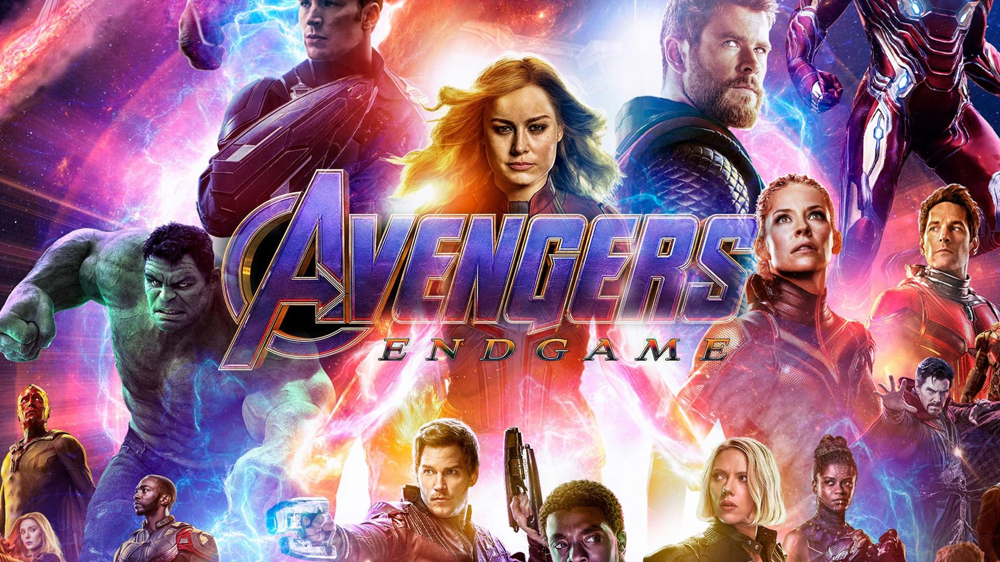

-
WALL-E (2008) (Sci-Fi)

Where to Watch: Disney+
Finding Nemo's Andrew Stanton went from deep sea to deep space for this delightfully warped trek, seen through the eyes of a trash-bot tasked with cleaning up a centuries-later Earth smothered in garbage.
Laced with satirical social commentary regarding the consequences of excess and pollution, WALL-E is a love story among the landfills and one of the best Pixar movies to date. It's an imaginative romp through the fattened ashes of humanity featuring a mostly-silent, slapstick-prone protagonist finding romance amidst enthralling visuals and an emotionally-charged apocalypse. Evoking the distinguished charm of old silent movies, while still featuring occasional dialogue, WALL-E clings to optimism in the wake of waste.
-
Harry Potter (Fantasy)

Chris Columbus launched the “Harry Potter” movie franchise with bloated fantasy spectacles that delivered eye-popping VFX thrills and squeaky clean, family-friendly storytelling. It wasn’t until Alfonso Cuarón stepped in to helm the third installment, “Harry Potter and the Prisoner of Azkaban,” that cinephiles started taking “Harry Potter” seriously. In Cuarón’s hands, the franchise realized its full potential as a studio blockbuster that could match its fantasy dazzle with mature emotional undertones.
The filmmaker allowed the franchise to grow up with its teenage characters and injected a darker tone into the series that made “Prisoner of Azkaban” the first “Harry Potter” film to have genuinely dangerous stakes for Harry, Ron, Hermione, and more. The visual palette alone was a stark contrast to what came before, as cinematographer Michael Seresin cast a cold, grey shadow over the look of the film to give it more of a hardened edge. In forcing the characters and the franchise itself to grow up, Cuarón delivered the best “Harry Potter” movie ever. —ZS
-
Avengers End game (Sci-Fi + Fantasy)
The Marvel Cinematic Universe (MCU) films are a series of American superhero films produced by Marvel Studios based on characters that appear in publications by Marvel Comics. The MCU is the shared universe in which all of the films are set. The films have been in production since 2007, and in that time Marvel Studios has produced and released 33 films, with at least 11 more in various stages of development. It is the highest-grossing film franchise of all time, having grossed over $29.8 billion at the global box office. This includes Avengers: Endgame, which became the highest-grossing film of all time at the time of its release.
Kevin Feige has produced every film in the series, alongside Avi Arad for the first two releases, Gale Anne Hurd for The Incredible Hulk, Amy Pascal for the Spider-Man films, Stephen Broussard for Ant-Man and the Wasp and Ant-Man and the Wasp: Quantumania, Jonathan Schwartz for Shang-Chi and the Legend of the Ten Rings, Nate Moore for Eternals, Black Panther: Wakanda Forever, and Captain America: Brave New World, Brad Winderbaum for Thor: Love and Thunder, Ryan Reynolds, Shawn Levy, and Lauren Shuler Donner for Deadpool & Wolverine, and Malcolm Spellman for Brave New World. The films are written and directed by a variety of individuals and feature large, often ensemble, casts.
Marvel Studios releases its films in groups called "Phases". Its first film is Iron Man (2008), which was distributed by Paramount Pictures. Paramount also distributed Iron Man 2 (2010), Thor (2011), and Captain America: The First Avenger (2011), while Universal Pictures distributed The Incredible Hulk (2008). Walt Disney Studios Motion Pictures began distributing the series with the crossover film The Avengers (2012), which concluded Phase One. Phase Two comprises Iron Man 3 (2013), Thor: The Dark World (2013), Captain America: The Winter Soldier (2014), Guardians of the Galaxy (2014), Avengers: Age of Ultron (2015), and Ant-Man (2015).
Captain America: Civil War (2016) is the first film of Phase Three, and is followed by Doctor Strange (2016), Guardians of the Galaxy Vol. 2 (2017), Spider-Man: Homecoming (2017), Thor: Ragnarok (2017), Black Panther (2018), Avengers: Infinity War (2018), Ant-Man and the Wasp (2018), Captain Marvel (2019), Avengers: Endgame (2019), and Spider-Man: Far From Home (2019). The first three Phases are collectively known as "The Infinity Saga". The Spider-Man films are owned, financed, and distributed by Sony Pictures.Phase Four's group of films began with Black Widow (2021), and was followed by Shang-Chi and the Legend of the Ten Rings (2021), Eternals (2021), Spider-Man: No Way Home (2021), Doctor Strange in the Multiverse of Madness (2022), Thor: Love and Thunder (2022), and Black Panther: Wakanda Forever (2022). The Phase featured these films, as well as eight television series and two specials for the streaming service Disney+.